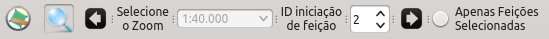

Esta ferramente é útil para o operador responsável pela revisão. Ela permite que cada feição de uma camada seja inspecionada em sequência gerando aumento de produtividade. Seu uso é simples e apenas necessita que o operador clique no botão presente na barra de ferramentas do DSGTools.
Ao clicar no botão será possível ver o seguintes botões:

Ao se definir os parâmetros e clicando-se em ou é possível iterar sobre as feições. Também é possível definir a escala de trabalho e o ID da feição manualmente, assim como iterar somente sobre as feções selecionadas da camada atual.